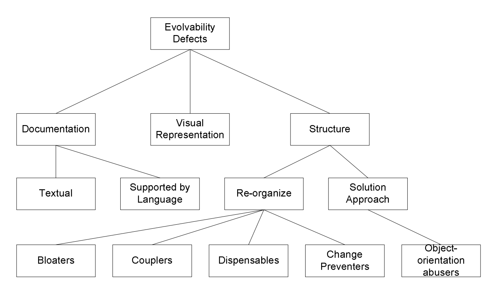

What's in this paper?
• Low software evolvability increases costs of software development for over 30%
• Classification of source code evolvablity defects based on analytical analysis of bad code smells and empirical analysis of over 500 evolvablity issues
• Context-specific demographics, i.e., role in organization and code ownership, affect evolvability evaluations, but general demographics, i.e., work experience and education, do not
Abstract
Low software evolvability may increase costs of software development for over 30%. In practice, human evaluations and discoveries of software evolvability dictate the actions taken to improve the software evolvability, but the human side has often been ignored in prior research. This dissertation synopsis proposes a new group of code smells called the solution approach, which is based on a study of 563 evolvability issues found in industrial and student code reviews. Solution approach issues require re-thinking of the existing implementation rather than just reorganizing the code through refactoring. This workalso contributes to the body of knowledge about software quality assurance practices by confirming that 75% of defects found in code reviews affect software evolvability rather than functionality. We also found evidence indicating that context-specific demographics, i.e., role in organization and code ownership, affect evolvability evaluations, but general demographics, i.e., work experience and education, do not
Ref
Mäntylä M. V., "Empirical Software Evolvability – Code Smells and Human Evaluations", PhD dissertation synopsis, in Proceedings of the 26th International Conference on Software Maintenance (ICSM), 2010, pdf
Related links
This paper is a 6 page summary of my PhD dissertation and the entire dissertation is available here.
{kind=link}